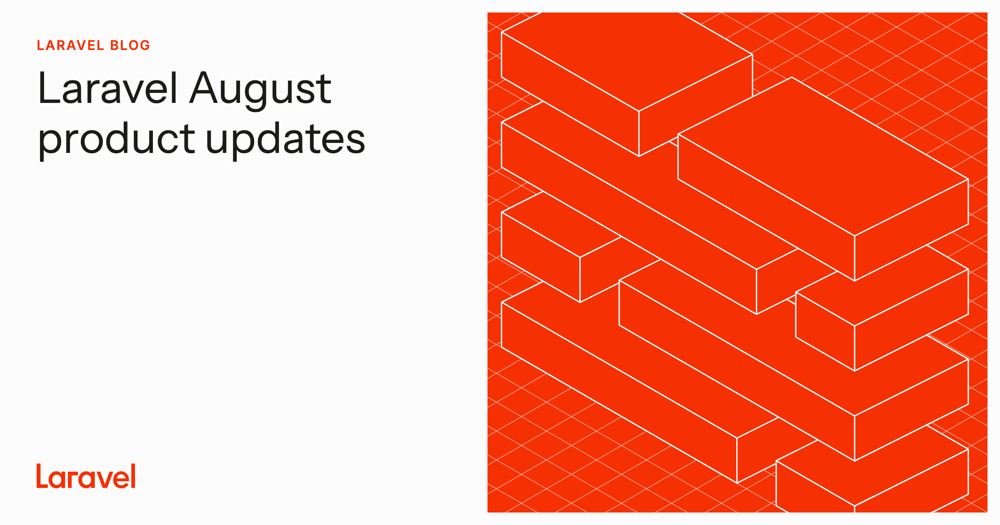
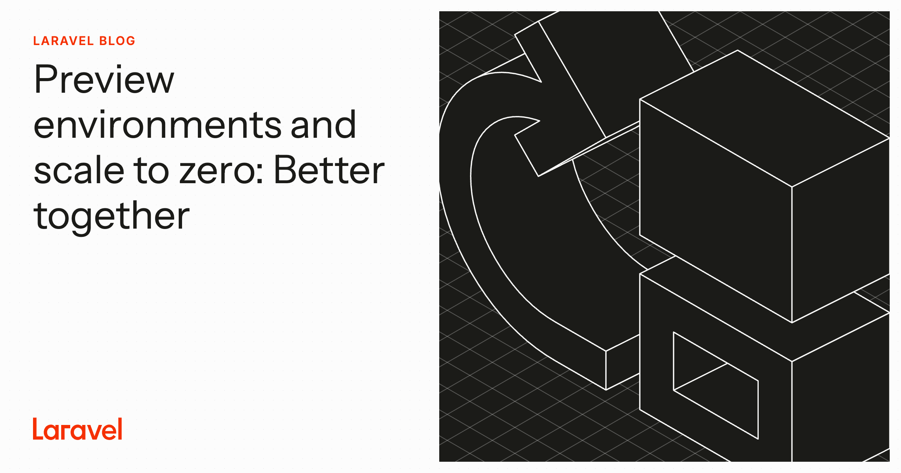
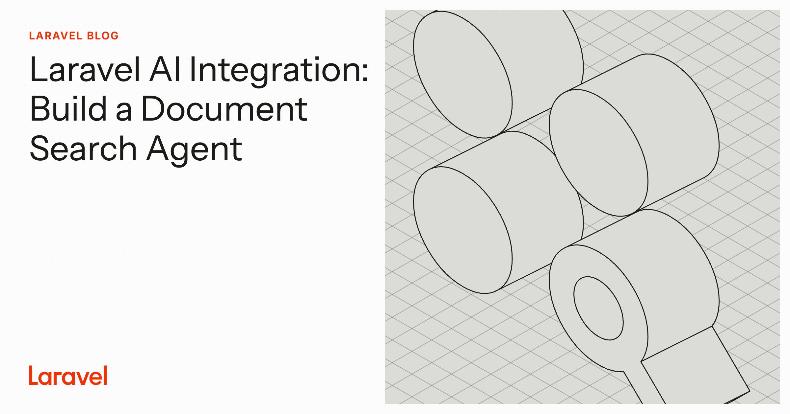
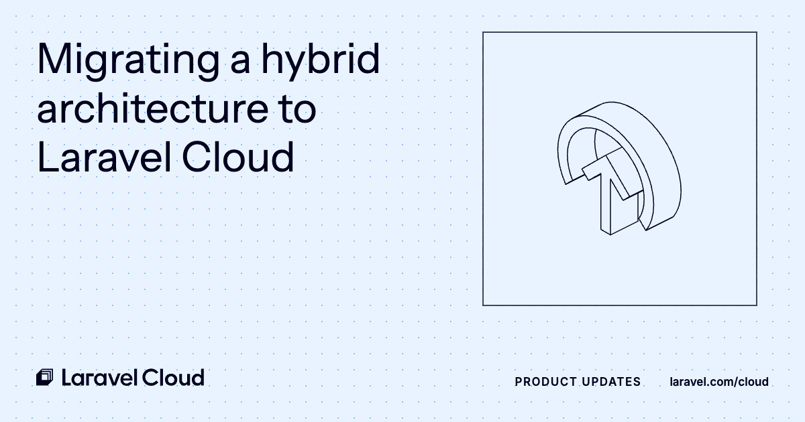
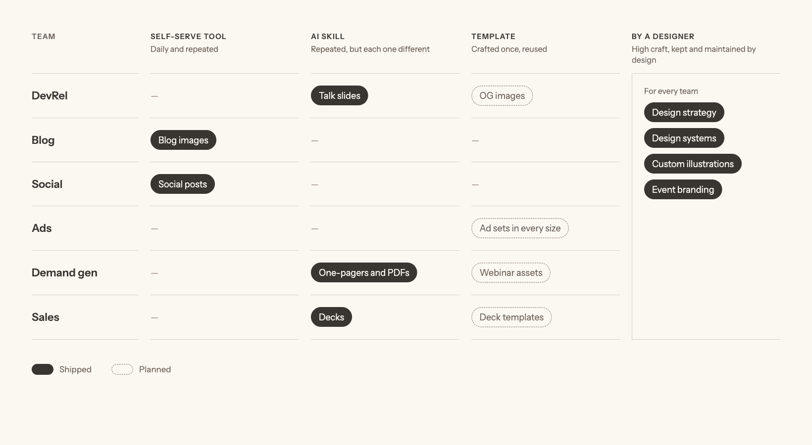
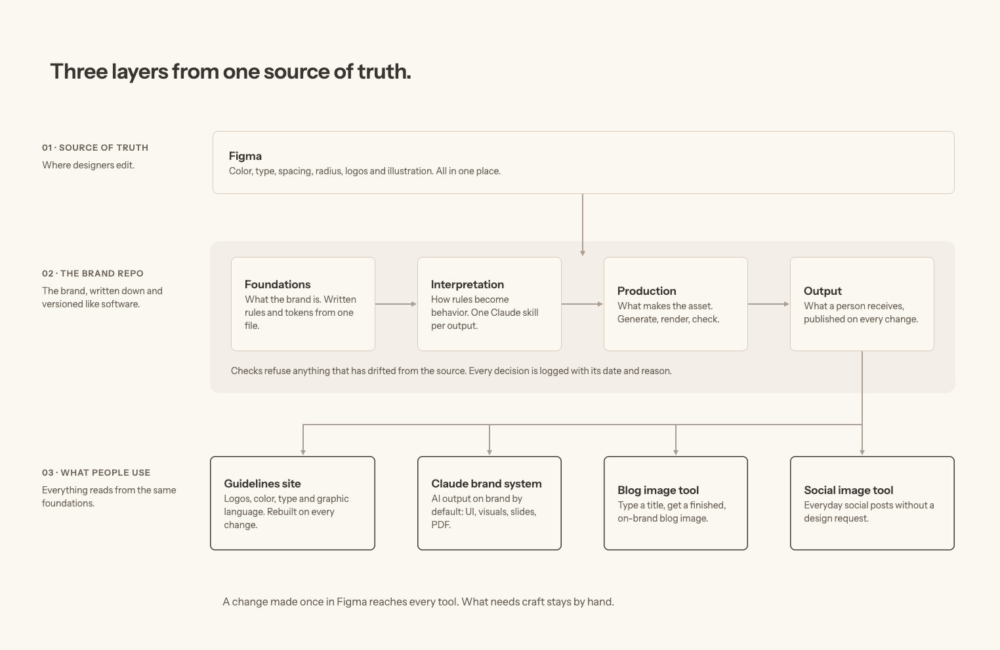

Laravel brand system: Built so marketing can move faster.
1 min read
- Client:
- Laravel
- Role:
- Designer
- Project:
- Brand system and AI tooling
A brand system for Laravel marketing: one source of truth behind the guidelines site, a Claude brand system, and self-serve tools, so the team ships on-brand work without waiting on design, and design gets back to creative and strategic work.
Laravel’s marketing team was growing fast, and almost every team needed design: DevRel, the blog, social, ads, demand gen, and sales.
I didn’t want design to become a bottleneck. Going through the daily requests, I noticed the same ones kept coming back, and anything repeated could become a tool: a way for every team to make everyday assets themselves, on brand, without waiting on design.




The approach
Instead of solving one-offs, I looked for patterns and asked what each need should become.
The goal was simple: marketing moves faster, and design spends its time on the work only design can do.
I started with discovery: conversations with the marketing team, a review of recent requests to see what repeated, and how people were already using AI for design.
From that I set one decision rule:
- A daily or repeated need becomes a self-serve tool or an AI skill.
- A high-craft need stays with design, as manual work or a template.
Not every need is an AI skill. Some need a tool, a template, or something else, but all of it lives in the same hub, as one system. Not every need is worth automating, and not everything should go through AI. Certain things still need a designer’s eye, and automating them would only have made them faster and worse. Knowing when and what to automate, and understanding the needs, shaped the system as much as the tools did.
Every request is a signal. I mapped what each team needed, then sent each need where it fits.

Illustration library
A working concept for a custom illustration system: isometric figures in the brand palette, filled or line, in light and dark. Describe an idea and it sketches one from the same parts.
It’s the custom set meant to replace the open-source illustrations in the image tool.
The system
I designed the brand as three layers, so every site, skill, and tool reads from one source and nothing drifts.

1. Source of truth. Color, type, spacing, logos, and illustration, defined once in Figma.
2. The brand, written down. Rules in plain words that people and Claude both follow, checks that catch anything drifting from the source, and a log of every decision with its reason. A fix made once carries into every future asset instead of staying in one project.
3. What people use. Three things shipped, each inheriting every brand decision from the layers above:
- Claude brand system. One skill per kind of output (interface, visuals, slides, PDF), so AI-generated work is on-brand by default instead of fixed afterward.
- Brand guidelines site. The basics of the brand, plus fonts, logos, tokens, and skills to download, rebuilt whenever a foundation changes.
- Self-serve tools for blog and social images. Marketers type a title and export. I launched them with type and color locked first and illustration left for later, so people could trust every output instead of fixing a third of it.
Brand guidelines site
The central hub for the brand. People learn the basics, then download what they need to build their own assets and tools: fonts, logos, design tokens, and Claude skills. Every download comes from the same source, so it’s never out of date.
AI sped up the process. Knowing the team shaped what we built.
I knew the people on both sides: the audience the assets speak to, and the marketing team who makes them.
Working closely with the team, I came to understand their pain points, recognized the patterns in what they needed, and built tools that help them move faster. That’s why the illustrations are labeled by concept, and why type and color were locked before anything else. Those are design decisions, not defaults.
Self-serve image tool
Marketers make OG, featured, and blog images that stay consistent. They pick the brand, color, and an illustration from a library labeled by concept, so no one has to guess which image fits an idea, then change the copy in seconds.
The MVP uses open-source illustrations from Isocons, as a stand-in for a custom set made by the team.
Fewer design requests, and the right owner for every change.
- The marketing team uses the self-serve tools on a daily basis to make their own assets.
- Title and copy changes moved to the people who own the copy. Late edits no longer reopen a design request.
- Requests that used to take up to an hour each, two to three times a day, no longer needed a designer.
I didn’t measure time saved formally. I tracked three signals instead: fewer repeat requests, steady tool usage, and fewer off-brand assets needing fixes.